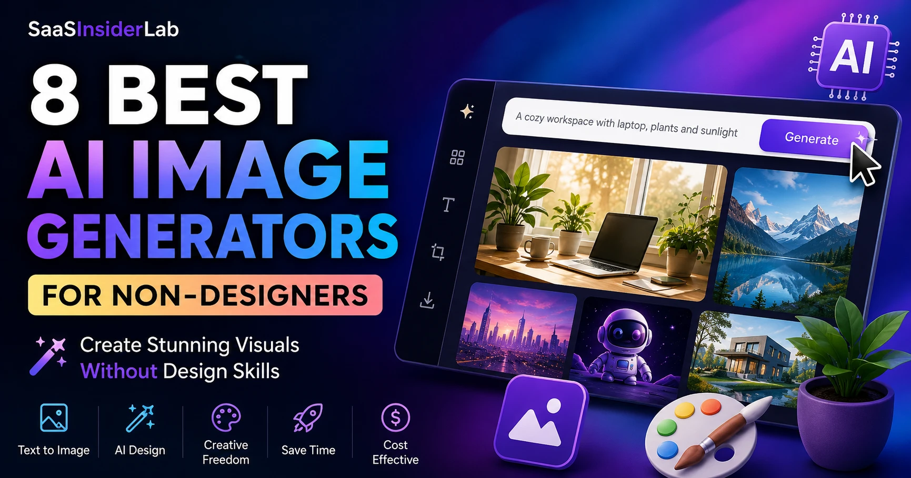

If you run a blog, manage social media for a small business, or create content as a freelancer, you already know the pressure. Every platform rewards visuals. Instagram reels, Pinterest pins, LinkedIn carousels, blog featured images — all of it demands design output that most of us simply were not trained to produce.
The problem is not a lack of ideas. Most creators and business owners know exactly what they want to communicate. What stops them is the gap between the idea and the execution. Professional graphic design takes years to learn. Hiring a designer costs money that early-stage creators and solopreneurs often do not have. Stock image libraries look generic and increasingly disconnected from brand personality. And doing everything manually takes far more time than it should.
That gap is exactly where AI image generators have stepped in. These tools convert plain text descriptions into original images in seconds, no design background required. In 2026, the technology has matured enough that even complete beginners can produce visuals that look credible and professional with a little practice.
That said, these tools are not magic. They have real quirks, inconsistent outputs, and learning curves that vary by platform. This guide covers what actually works, what does not, and which AI image creation tool makes the most sense for your particular situation.
1. What Are AI Image Generators?
At their core, AI image generators are tools that use machine learning models trained on massive datasets of images to generate new visuals based on a text prompt. You type a description — something like "a minimalist flat-lay of a coffee cup on a wooden desk, warm lighting, editorial style" — and the model produces an image that matches that description.
The technology behind this is called text-to-image generation. Models like Stable Diffusion, DALL-E, and Midjourney's proprietary system interpret your prompt and generate pixels that statistically match what images with those descriptions tend to look like. The results have gone from novelty to genuinely useful over the past few years.
For non-designers, the most relevant use cases include blog featured images, social media graphics, product concept visuals, presentation illustrations, YouTube thumbnails, and marketing assets. You are unlikely to use AI visual content tools to replace a full brand identity project or detailed product photography — but for the day-to-day visual needs of content creators and small businesses, they cover a lot of ground.
2. What Makes a Good AI Image Generator?
Not all AI design tools are built for the same user. When evaluating which one to use, these are the factors that matter most for non-designers:
Ease of use. Can a complete beginner get a reasonable result in under five minutes? Some tools require learning Discord bots or complex parameter syntax. Others work in a browser with a simple text box.
Image quality. Quality varies enormously across tools and even across different prompts within the same tool. Look for sharpness, coherence, and how realistically the model handles faces, hands, and text.
Prompt understanding. How well does the model interpret nuanced descriptions? A good tool will capture style, mood, and compositional instructions rather than just surface-level keywords.
Editing capabilities. Can you refine an output without regenerating from scratch? Inpainting, masking, and outpainting features dramatically reduce wasted generations.
Commercial usage rights. This is often overlooked by beginners. Many tools have specific license terms around AI-generated images used for commercial purposes. Always check before publishing.
Value for money. Free tiers exist on most platforms but often come with daily generation limits or watermarks. Paid plans range from about $8 to $30 per month depending on the tool.
3. Best AI Image Generators for Non-Designers
ChatGPT Image Generation
ChatGPT's built-in image generation, powered by DALL-E 3, has become one of the most accessible entry points for non-designers. Because it lives inside the ChatGPT interface that many people already use for writing and research, there is almost no additional setup required.
What makes it stand out for beginners is how naturally it handles conversational prompts. You do not need to learn specific syntax or parameters. You can describe what you want in plain language, ask for changes in follow-up messages, and refine outputs iteratively. The model is notably strong at following stylistic direction — asking for a "clean, editorial blog header image in muted earth tones" produces something coherent rather than a confused mess.
Practical use cases include blog featured images, social media visuals, marketing graphics, and concept creation for presentations or pitches. It also supports image editing — you can upload an existing image and ask ChatGPT to modify specific elements, which is genuinely useful for quickly adapting visuals without a design app. Many beginners find it significantly easier to use than Midjourney because there are no Discord bots, no cryptic parameters, and no separate platform to learn.
| Best for | Blog featured images, social media visuals, marketing graphics, concept creation, image editing |
| Who should use it | Bloggers, solopreneurs, and content creators who want to generate visuals within their existing ChatGPT workflow |
| Biggest strength | Conversational refinement — describe changes in plain language and iterate naturally |
| Biggest limitation | Requires ChatGPT Plus subscription; finite daily generation credits |
| Pricing | Included with ChatGPT Plus at $20/month. Free tier users get limited access |
| Beginner-friendly? | Very — the easiest starting point for most non-designers |
Midjourney
Midjourney produces some of the most visually striking outputs of any AI art generator available today. If you have seen AI-generated images circulating on social media with that distinctive painterly or cinematic quality, there is a good chance Midjourney was involved.
The quality ceiling here is genuinely high. For creative professionals, photographers, and illustrators looking to experiment with AI, Midjourney offers expressive results that other tools often struggle to match. Artistic photography styles, fantasy illustration, abstract concepts — all of these render exceptionally well. The trade-off is the learning curve: Midjourney operates through Discord, which immediately creates friction for people who have never used that platform. Beyond the interface, the tool rewards users who invest time in understanding prompt parameters.
| Best for | Artistic, editorial, and high-quality visual outputs with a distinctive aesthetic character |
| Who should use it | Creative professionals, designers, and experienced users who want maximum visual quality |
| Biggest strength | Highest artistic quality ceiling of any tool in this list |
| Biggest limitation | Steep learning curve; Discord-based interface; no free tier |
| Pricing | From $10/month (Basic) to $60/month (Pro) |
| Beginner-friendly? | Not immediately — not the right starting point for absolute beginners |
Adobe Firefly
Adobe Firefly is built with commercial use in mind. Adobe has trained its model primarily on licensed Adobe Stock content and openly licensed material, which means the images it generates are designed to be commercially safe in a way that tools trained on scraped internet data cannot fully guarantee.
For brands and businesses where intellectual property is a genuine concern, that distinction matters. Firefly integrates directly with Photoshop and other Adobe Creative Cloud apps, which means designers can use it as part of an existing workflow rather than switching between separate platforms. The generative fill and generative expand features inside Photoshop are particularly practical for production-ready work.
| Best for | Commercially safe content creation, brand-safe assets, integration with existing Adobe workflows |
| Who should use it | Brands, agencies, and anyone already using Adobe Creative Cloud who needs IP-safe AI visuals |
| Biggest strength | Trained on licensed content — the safest option for commercial publishing |
| Biggest limitation | Less compelling as a standalone tool if you are not already in the Adobe ecosystem |
| Pricing | Included with Creative Cloud plans. Standalone Firefly credits also available; free tier with monthly limits |
| Beginner-friendly? | Moderate — clean interface, but most value comes from Photoshop integration |
Canva AI Image Generator
Canva is where a lot of non-designers already spend their time, and the addition of AI image generation within Canva's existing design environment makes it a natural choice for content creators who want minimal friction.
The image quality is not at the artistic peak of Midjourney or the prompt flexibility of ChatGPT, but what Canva offers is integration. You can generate an image and immediately drop it into a social media template, resize it for different platforms, add text overlays, and publish — all without leaving the app. That workflow efficiency is genuinely valuable for bloggers and social media creators who are producing volume. Many social media creators rely on Canva as their central visual production hub, and AI image generation makes it even more capable.
| Best for | Social media graphics, marketing assets, presentations, brand materials — all within one design workflow |
| Who should use it | Social media creators, bloggers, and small business owners already using Canva |
| Biggest strength | Generate and design in the same app — no tool switching |
| Biggest limitation | Image quality is narrower than dedicated AI image tools |
| Pricing | Limited free generations on Canva Free. More credits with Canva Pro at ~$15/month |
| Beginner-friendly? | Extremely — the most beginner-friendly design-integrated option available |
Ideogram
Ideogram has earned a specific reputation for something that most AI image tools struggle with badly: rendering legible text within images. If you need to generate a visual that includes a readable headline, a logo concept with text, or a poster with clear typographic elements, Ideogram is the most reliable option currently available.
Beyond text rendering, the overall image quality is strong and the interface is clean and accessible to beginners. There is a free tier with daily generations, and paid plans are reasonably priced. For content creators who regularly need text-on-image visuals — event announcements, quote graphics, promotional banners — Ideogram fills a gap that other tools leave wide open.
| Best for | Images with readable text overlaid — posters, quote cards, promotional banners, thumbnails with headlines |
| Who should use it | Marketers, bloggers, event promoters, YouTube creators needing text-on-image visuals |
| Biggest strength | Best-in-class text rendering inside images — a real gap-filler |
| Biggest limitation | General-purpose image quality, while solid, is not as expressive as Midjourney |
| Pricing | Free tier available. Paid plans from ~$8/month |
| Beginner-friendly? | Yes — clean interface, simple prompting |
Leonardo AI
Leonardo AI offers more granular control than most beginner-oriented tools, with model selection, style fine-tuning, and a robust image-to-image workflow. It has become popular among content creators who want something more flexible than Canva AI but less intimidating than Midjourney. The platform offers a generous free tier, making it accessible for creators who are not ready to commit to a paid subscription. For freelancers working across multiple client projects, Leonardo's flexibility for different visual styles makes it a practical middle-ground option.
| Best for | Digital illustration, stylized content, image-to-image workflows, creative exploration |
| Who should use it | Content creators and freelancers who want more control than Canva but find Midjourney too complex |
| Biggest strength | Generous free tier plus genuine creative flexibility across many visual styles |
| Biggest limitation | Quality varies significantly depending on model selection and settings |
| Pricing | Free tier with daily tokens. Paid plans from ~$10/month |
| Beginner-friendly? | Moderate — more options than simpler tools, but manageable with exploration |
Microsoft Designer
Microsoft Designer is built around simplicity and integrates with the Microsoft 365 ecosystem. Powered by DALL-E, it allows users to generate images and immediately apply them to templates for social posts, invitations, and marketing materials. It is not the most powerful tool in this list, but it is one of the most approachable. If you are already using Microsoft 365 at work or for your business, Designer gives you a practical entry point into AI image generation without requiring additional subscriptions.
| Best for | Simple template-driven visuals within the Microsoft 365 workflow |
| Who should use it | Small business owners and professionals already in the Microsoft ecosystem |
| Biggest strength | Zero friction for Microsoft 365 users — no new accounts or subscriptions needed |
| Biggest limitation | Feature depth is thinner than dedicated image generation platforms |
| Pricing | Free with a Microsoft account. Enhanced features with Microsoft 365 |
| Beginner-friendly? | Very — minimal setup, familiar Microsoft interface |
Google ImageFX
Google's ImageFX, part of the Google Labs suite, uses the Imagen model to generate high-quality, photorealistic images. It is clean, fast, and free to access through a Google account. Image quality is genuinely competitive, particularly for photorealistic outputs. The interface is minimal and easy to use. The main limitation is that it is still positioned as an experimental tool, which means feature depth is thinner than dedicated platforms and availability may vary by region. For anyone who wants to experiment with high-quality AI image generation tools at no cost, it is one of the best free options available.
| Best for | Photorealistic image generation, experimentation, budget-conscious creators |
| Who should use it | Anyone who wants to try high-quality AI image generation before committing to a paid tool |
| Biggest strength | High-quality photorealistic outputs — at zero cost |
| Biggest limitation | Experimental status; thinner feature set; regional availability varies |
| Pricing | Free with a Google account (subject to availability) |
| Beginner-friendly? | Very — minimal interface, nothing to configure |
4. AI Image Generator Comparison
Rather than a feature matrix filled with marketing claims, here is a practical summary of how these tools compare for the kinds of users this guide is written for:
| Tool | Ease of Use | Image Quality | Free Tier? | Starting Price | Best For |
|---|---|---|---|---|---|
| ChatGPT Image Gen | ⭐⭐⭐⭐⭐ | ⭐⭐⭐⭐ | Limited | $20/mo (Plus) | Bloggers, solopreneurs |
| Midjourney | ⭐⭐ | ⭐⭐⭐⭐⭐ | No | $10/mo (Basic) | Creative professionals |
| Adobe Firefly | ⭐⭐⭐⭐ | ⭐⭐⭐⭐ | Yes | CC Plan | Brands, agencies |
| Canva AI | ⭐⭐⭐⭐⭐ | ⭐⭐⭐ | Yes | ~$15/mo (Pro) | Social media creators |
| Ideogram | ⭐⭐⭐⭐ | ⭐⭐⭐⭐ | Yes | ~$8/mo | Text-on-image visuals |
| Leonardo AI | ⭐⭐⭐ | ⭐⭐⭐⭐ | Yes | ~$10/mo | Freelancers, creators |
| Microsoft Designer | ⭐⭐⭐⭐⭐ | ⭐⭐⭐ | Yes | Free / M365 | Microsoft 365 users |
| Google ImageFX | ⭐⭐⭐⭐⭐ | ⭐⭐⭐⭐ | Yes | Free | Budget creators |
5. Real-World Use Cases
Different creators need different things. Here is a practical breakdown of which tools fit which workflows:
Bloggers benefit most from ChatGPT Image Generation for featured images and in-article illustrations. The iterative chat-based refinement workflow fits naturally into the writing process — you can draft your article and generate the featured image in the same session, especially if you are already using ChatGPT for writing. If you are looking for a broader set of AI writing tools to pair with your image workflow, that is worth exploring too.
Freelancers working across multiple client projects will find Leonardo AI or Adobe Firefly most flexible, depending on whether they are already invested in the Adobe ecosystem. Leonardo offers creative range on a budget; Firefly offers commercial safety.
Social media creators producing high volume across platforms get the most value from Canva AI, where generation and design work happen in the same app. No tool-switching, no file exports — just create and publish.
YouTube creators who need thumbnails with readable text should keep Ideogram close. It handles text inside images better than any other tool in this list, which matters enormously for YouTube thumbnails where legibility drives click-through rates.
Small business owners with limited budgets can get meaningful mileage from Google ImageFX and Microsoft Designer before committing to paid plans. Canva Pro is worth the investment once visual production volume increases.
Marketing teams with commercial concerns should evaluate Adobe Firefly seriously, particularly if Creative Cloud is already in the budget. The IP-safety argument is real and worth the consideration.
6. How AI Image Generators Fit Into a Modern Content Workflow
AI image generation is most useful when it is treated as one part of a practical workflow rather than a standalone magic button. A realistic approach looks something like this:
Start by developing your content idea and identifying where you need visuals — a featured image, an infographic concept, a social post graphic. With a clear brief in mind, write a detailed prompt that captures the visual style, mood, and key elements you want. More specificity in your prompt consistently leads to better results.
Generate multiple variations rather than treating your first output as final. Most tools allow batch generation, and reviewing four options gives you a much better chance of landing on something usable. From there, use the platform's editing tools or bring the image into Canva to refine, resize, and format for your specific channels.
Once you have a visual that works, think about how it can be repurposed. A blog featured image can become a Pinterest pin, a LinkedIn post background, or a cropped Instagram square with minimal additional effort. That repurposing step is where AI tools for content creators start to seriously reduce the time investment per piece of content.
7. Common Mistakes Beginners Make
Expecting perfect results on the first try. AI image generation is iterative. Most good outputs come after multiple rounds of prompt refinement, not a single attempt. Budget time for this.
Writing vague prompts. "A business image" will get you something generic. "A flat-lay photograph of a laptop, coffee cup, and notebook on a white marble desk, natural window light, clean and minimal" will get you something useful. The detail is the difference.
Ignoring editing tools. Every platform has some form of refinement feature. Beginners often regenerate from scratch when a small targeted edit would fix the specific issue.
Overusing AI-generated visuals. An audience can notice when every image on a site was generated the same way. Mixing AI visuals with photography, screenshots, and original graphics keeps your content looking varied and human.
Not maintaining brand consistency. AI tools do not automatically know your brand colours, fonts, or visual style. Without deliberate prompting and consistency in your style descriptions, your AI visuals will look like they belong to a different brand each time.
Misunderstanding commercial usage rights. Read the terms of service for any tool you plan to use commercially. Rights vary significantly between platforms and subscription tiers — this is not something to assume your way through.
8. Honest Limitations of AI Image Generators
It is worth being direct about what these tools currently cannot do reliably, because the hype often outpaces reality.
Outputs are inconsistent. The same prompt run twice will produce different results, and not always in a good direction. Building a reliable visual library requires more generations than you might expect.
Text inside images remains a problem for most tools except Ideogram. A headline that looks fine in the thumbnail can render as garbled or misspelled characters on inspection. Always zoom in before publishing.
Brand consistency is genuinely difficult to maintain without significant prompt engineering or access to fine-tuning features. Keeping a consistent visual identity across dozens of AI-generated images is harder than it sounds.
Subscription costs add up. If you are using two or three AI tools — which many content creators end up doing — you are potentially spending $40 to $60 per month just on image generation. That is worth factoring into your overall tooling budget.
Human review is not optional. AI tools generate images that occasionally contain subtle errors — distorted backgrounds, anatomically incorrect hands, phantom objects — that only become obvious after a second look. Do not skip the review step.
9. Which AI Image Generator Should Beginners Start With?
Who Should Use ChatGPT Image Generation?
If you already have a ChatGPT Plus subscription, start here. The conversational interface makes prompt iteration feel natural, the output quality is consistently good for content creation use cases, and the ability to edit images through follow-up messages adds genuine flexibility. It is the most frictionless option for beginners who want results quickly.
It pairs especially well with your existing writing and research workflow. If you are comparing AI assistants more broadly, the ChatGPT vs Claude vs Gemini breakdown is worth reading alongside this guide to help you choose the right starting point for your overall AI setup.
Who Should Use Canva AI?
If you are already using Canva for your social media graphics and marketing materials, the AI image generator is a natural extension of that workflow. It is not the most powerful image generation tool available, but the integration with Canva's templates and design features makes it practical for high-volume social media production. Canva Pro is worth the cost if you are creating content regularly.
Who Should Use Midjourney?
Midjourney makes sense when visual quality is a primary concern and you are willing to invest time in learning how to prompt effectively. For creative professionals, photographers, and designers who want AI tools that produce outputs with genuine artistic character, it is still the leader. For absolute beginners, it is not the right starting point — come back to it once you have built some prompting instincts with an easier tool.
10. Best AI Tool Combinations for Non-Designers
The most practical setups for different creator types tend to follow a pattern of pairing an image generator with a broader content workflow tool. If you are building a full AI tool stack as a solopreneur, image generation is one piece of a larger puzzle.
Budget creator setup: Google ImageFX (free) + Canva Free for design templates. Gets you high-quality image generation and basic design work at zero cost.
Blogger setup: ChatGPT Plus (image generation + writing) + Canva Pro for featured image refinement and social resizes. Two tools, most needs covered.
Freelancer setup: Leonardo AI (for creative range) + Canva Pro (for client-deliverable templates). Keeps costs manageable while offering genuine creative flexibility across client projects.
Small business setup: Canva Pro + Ideogram (for promotional graphics with text). Practical, affordable, and covers the most common visual needs for small business marketing.
Professional creator setup: ChatGPT Plus + Midjourney + Adobe Firefly (if in Creative Cloud). High output quality across different visual styles and use cases, with commercial safety covered by Firefly where it matters.
11. Frequently Asked Questions
For most beginners, ChatGPT Image Generation or Canva AI are the most practical starting points. Both work in familiar browser-based interfaces, require no special technical knowledge, and produce results good enough for blog posts, social media, and marketing materials right away. If budget is a concern, Google ImageFX offers a free alternative with competitive image quality.
Yes, with the right prompts and a bit of iteration. Tools like Midjourney, Adobe Firefly, and ChatGPT Image Generation are capable of producing visuals that look professional in editorial, marketing, and social media contexts. Quality depends heavily on how well you write your prompt and how much time you spend refining outputs. Expecting professional results from a vague, single prompt will usually disappoint.
They are better at different things. Midjourney produces more artistically expressive, high-quality outputs and gives experienced users more stylistic control. ChatGPT Image Generation is significantly easier to use, integrates with a writing and research tool many creators already have, and handles iterative refinement through natural conversation. For most non-designers, ChatGPT Image Generation is more immediately useful. For those willing to invest in learning, Midjourney has a higher quality ceiling.
It depends on the specific tool and plan. Adobe Firefly is designed with commercial use in mind and trained on licensed content, making it the most straightforward choice for brands with IP concerns. ChatGPT and Canva AI both allow commercial use under their respective terms of service, but you should read those terms carefully — particularly around attribution and prohibited uses. When in doubt, verify with the platform directly before publishing commercially.
Canva AI and ChatGPT Image Generation are consistently the easiest for people with no prior design or AI experience. Both work in clean browser-based interfaces, handle natural language prompts without requiring special syntax, and produce results quickly. Microsoft Designer and Google ImageFX are also approachable for beginners. Midjourney, despite its output quality, has the highest learning curve due to its Discord-based interface and parameter system.
12. Conclusion
If you have been putting off experimenting with AI image generation because it seemed complicated or expensive, the reality in 2026 is more approachable than you might expect. The barrier to creating usable visuals is genuinely lower than it has ever been.
For most bloggers, content creators, and small business owners, the practical recommendation is simple: start with ChatGPT Image Generation if you already have ChatGPT Plus, or Canva AI if you are already using Canva. Add Ideogram to that setup if you regularly need images with readable text. Build your prompting skills through iteration, review every output before publishing, and do not expect perfection on the first try.
Start simple, stay consistent, and let the time savings compound. SaaSInsiderLab consistently finds across tool categories that the best tool is the one you will actually use — not the most feature-rich one on paper.